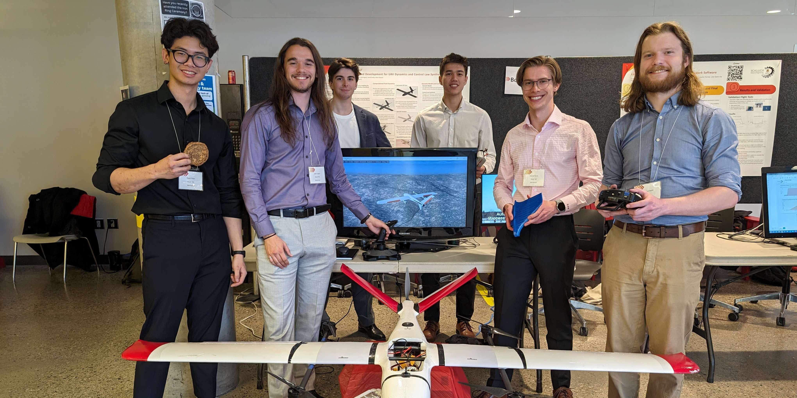
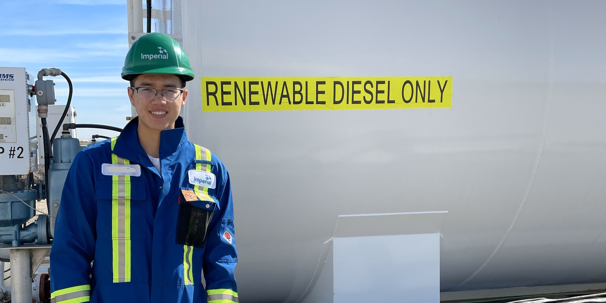

The goal of this capstone project is to develop a reliable process for modelling the aerodynamics of a known stable airframe, and consequently develop a theoretical control system based on the modelled dynamic behaviours.
To verify the validity of our developed process, an analysis between the simulated and experimental aerodynamics was performed to determine the effectiveness of CFD methods at capturing the dynamics of a UAV.
A comparative analysis of the theoretical control law to the open sourced ArduPilot control software was completed via experimental flight testing to verify the efficacy and performance of the developed control law.

Hammerhead is a fixed-wing unmanned aerial vehicle (UAV) designed to compete in the 2022 and 2023 AUVSI Student Unmanned Aerial Systems Competition (SUAS).
It is a modular, highly maneuverable, and stable dual-prop aircraft with a 3.5 meter wingspan and a cruise speed of 80kph.
A 2-axis camera gimbal mounts to the nose of the UAV, allowing for omnidirectional object detection in-flight.
The UAV was designed and manufactured from the ground up with only the electronic components, propulsion system, and nose landing gear being store-bought.
The wing skin and fuselage are comprised of carbon fiber composite materials manufactured in-house at the University of Calgary.

The Renewable Diesel (RD) experiment took place at the Kearl Oil Sands Project during my internship in 2022.
RD is a diesel fuel based from vegetable oils such as soy or canola.
The purpose of the experiment is to examine the effects of RD compared to petroleum-based diesel (PD).
Specifically, we investigated the effect of RD by monitoring the power output, fuel consumption, engine efficiency, mine production, and mechanical wear of the equipment that was being tested in conjunction with equipment fuelled with PD.
The success of this experiment resulted in RD being deployed to all mining equipment at Kearl in 2023.